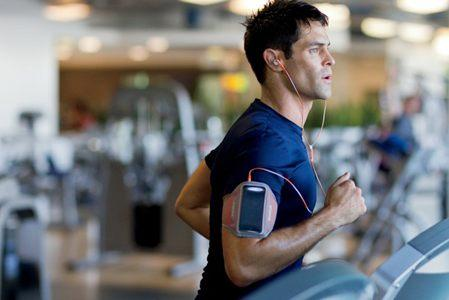

| 好处1：运动助你控制体重 |
| 运动可防止肥胖或有利于减肥。运动时，你会燃烧热量。运动强度越大，燃烧的热量就越多。你也无需为了减肥每天花大量的时间运动，如果你无法进行严格意义上的锻炼，那就在日常小事上勤快些吧——每天不坐电梯而是爬楼梯上下楼或者多做些家务。 |
| 好处2：运动帮你抵御疾病常保健康 |
| 担心得心脏病?想要预防高血压?不管你现在多重，参加运动可增加体内高密度脂蛋白(HDL)或“好”胆固醇的量，降低对身体不利的甘油三酸酯。
体育锻炼将令你血流畅通，降低心血管疾病的风险。经常锻炼可以预防和控制人体健康等问题如中风、代谢综合征。 |
| 好处3: 运动给你带来好心情 |
| 想振奋下心情?亦或重压之下想要发泄一下?在体育馆锻炼或快走30分钟可以帮你的忙。体育锻炼会刺激大脑释放化学物质，令你感到开心、放松。长期锻炼让你更加健美，对自己的容貌更加满意，进而增强自信心和自尊心。 |
| 好处4: 运动使精力充沛 |
| 去杂货店购物或者一点家务就令你气喘吁吁?日常锻炼会增加你的肌肉力量，让你拥有更强的耐力。锻炼与体育运动有助于体内将氧气和养分的输送到各组织，使心血管系统工作效率更高。心肺效率提高了，干起日常家务就更有劲了。 |
| 好处5：运动改善睡眠 |
| 无法入睡或是睡意太浓不想起床，那么经常参加锻炼，你便能入睡更快、睡眠更深。但是记住睡前千万别进行运动锻炼，否则你会因太兴奋而无法入睡。 |